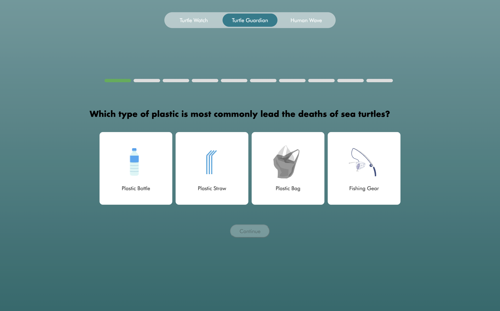
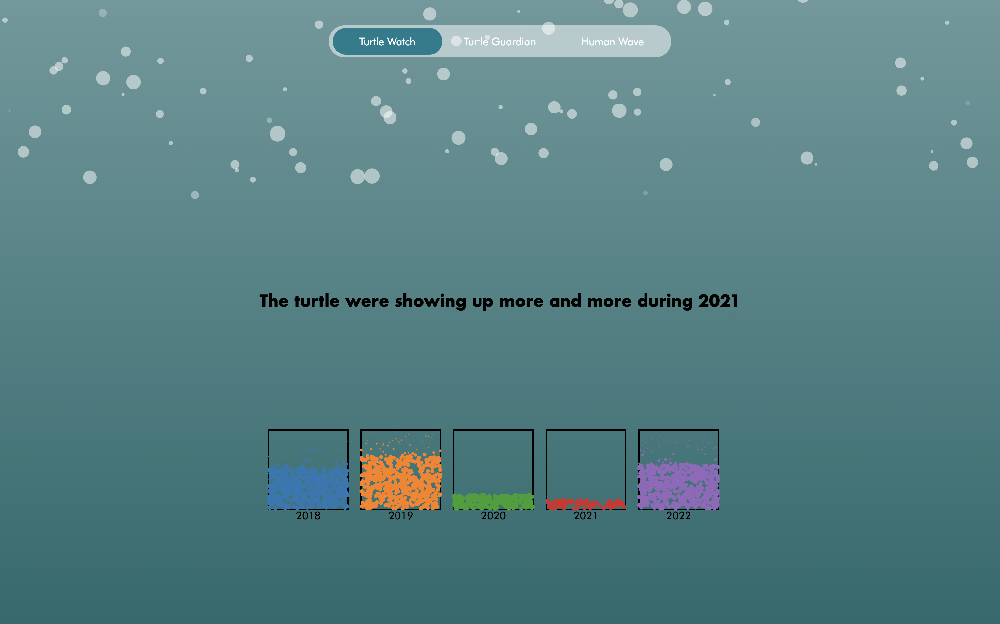
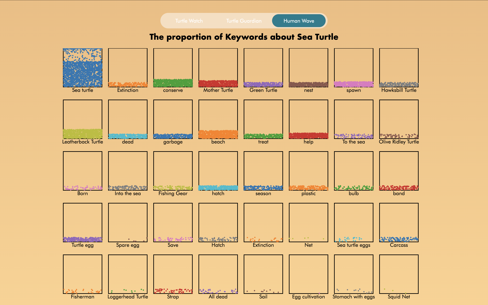

“A data storytelling website raising awareness about sea turtle conservation in Thailand through play, dashboards, and social insights.”
Overview
Turtle Guardian is an interactive platform designed to raise awareness about the threats sea turtles face, particularly from plastic waste. The site combines playful learning, real-world data, and social media analysis to encourage reflection, education, and collective action for marine conservation.
Core Features
The platform consists of three interconnected parts:
- Turtle Guardian Quiz — a gamified experience where players learn how to protect turtles through interactive questions.

A gamified experience where players learn how to protect turtles through interactive questions. If they answer incorrectly, they can learn from their mistakes and try again, reinforcing their understanding. - Turtle Watch Dashboard — a data visualization tool showing sea turtle population and nesting patterns in Thailand (2020–2022).

A data visualization tool showing sea turtle population and nesting patterns in Thailand (2020–2022). - Human Wave Analysis — an exploration of 4,000+ Thai social media posts to understand public engagement and online activism related to sea turtle conservation.

An exploration of 4,000+ Thai social media posts to understand public engagement and online activism related to sea turtle conservation.
Process
Research — Studied global campaigns using animals as symbols of environmental activism and benchmarked interactive education tools.
Concept — Make the game to help the players to learn about the sea turtles and how to protect them. Then give them a dashboard to see the sea turtle population and nesting patterns in Thailand (2020–2022) also how the people are engaging with the sea turtles in Thailand.
Design — Developed a UX/UI system balancing playfulness with clarity. Used storytelling flows for accessibility.
Development — Built the quiz and dashboard with interactive front-end libraries; integrated datasets and social media analysis outputs.
Testing — Collected feedback from young audiences, educators, and conservation activists to refine both the educational depth and ease of use.